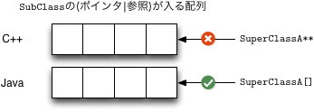

結論
配列はアレなので使ってはいけない。
Javaの配列とは
Javaの配列はcovariantです。IntegerはNumberのサブクラスなんだから、Integer[]もNumber[]のサブクラスだ、というのがcovariantです。なので次のようなことが出来てしまいます。
見た目の型はNumberの配列なのに、代入できる要素はIntegerの要素のみという配列が作れます。ここで、Integer以外の要素を代入しようとすると、同じNumberを継承しているLongでも実行時エラーになります。このときのNumberの配列の実体は、Integerの配列ですから。
配列は使ってはいけない
先の記事とあわせて、配列は使ってはいけない。
フォークが出来るOSであれば、単純にフォークをしてそのあとにProcess._bootstrapがProcess.runを呼び出すだけですが、Windowsではプロセスをフォークすることが出来ないので、まっさらなプロセスを立ち上げることになります。このため、ドキュメンテーションに書いてあるとおり、グローバルな変数の中身は親プロセスと違うものになります。また、Windowsではpy2exeのように実行ファイル化されたりします。
Windowsにおけるmultiprocessingモジュールの動きは次のようなものになります:
- pipeを作っておく。
- 現在の実行ファイルに--multiprocessing-forkというコマンドラインオプションと先ほどのpipeの読み出し側をつけてCreateProcessする。
- 親プロセスはpipeを通じて、Processオブジェクトをpickleで直列化して子プロセスに送る。
- 子プロセスは--multiprocessing-forkをフラグとして認識して、pipeからProcessオブジェクトを読み出す。
- 子プロセスがProcess._bootstrapを呼び出す。
Freezeされていない場合は、過程2のところでは、実行ファイルがpython.exeになるので、-cオプションで過程4を実行するようなプログラムを指定します。Freezeされている場合は、-cのようなオプションを受け取れないので、multiprocessing.freeze_supportがそのような役割を果たします。これがFreezeされている場合にmultiprocessing.freeze_supportが必要になる理由です。
ドキュメンテーションにも書いてあるとおり、csvモジュールでは文字列のエンコーディングを正しく取り扱ってくれません。csvモジュールのコアの部分はCで書かれており、_csv.cというファイルに記述されています。
csv.Readerは与えられたfile-likeオブジェクトからPyString_AsStringをつかってchar *を得ようとします。:
static PyObject *
Reader_iternext(ReaderObj *self)
{
PyObject *lineobj;
PyObject *fields = NULL;
char *line, c;
...
do {
lineobj = PyIter_Next(self->input_iter);
...
line = PyString_AsString(lineobj);
...
}
}
この関数はchar *を得るために使われるオブジェクトがstrかunicodeかで動作が変わります。strであった場合は直接そのオブジェクトのバッファが返されるのですが、unicodeであった場合は、_PyUnicode_AsDefaultEncodedStringによって、デフォルトエンコーディングに変換された文字列を返す動作になっています。
/*const*/ char *
PyString_AsString(register PyObject *op)
{
if (!PyString_Check(op))
return string_getbuffer(op);
return ((PyStringObject *)op) -> ob_sval;
}
int
PyString_AsStringAndSize(register PyObject *obj,
register char **s,
register Py_ssize_t *len)
{
...
if (!PyString_Check(obj)) {
#ifdef Py_USING_UNICODE
if (PyUnicode_Check(obj)) {
obj = _PyUnicode_AsDefaultEncodedString(obj, NULL);
...
}
...
}
...
}
このときに変換できないような文字を含んでいた場合は、読み込みが失敗します。もしデフォルトエンコーディングが変更されていた場合は、codecs.openを使った場合やopenを使った場合とでおもしろい?結果が得られるかもしれません。
csv.Readerが返す結果は、unicodeではなく、ファイルのエンコーディングでエンコードされたそのままのstrの配列や辞書になっています。よって、それがきちんとunicodeなのか、なにかのエンコーディングでエンコードされたstrなのかを意識しないと、あるはずのキーがないというような現象に出くわしたりします。これを意識するのは面倒くさいので、適切なcsv.Readerのラッパーを用意して使うようにした方がよいです。